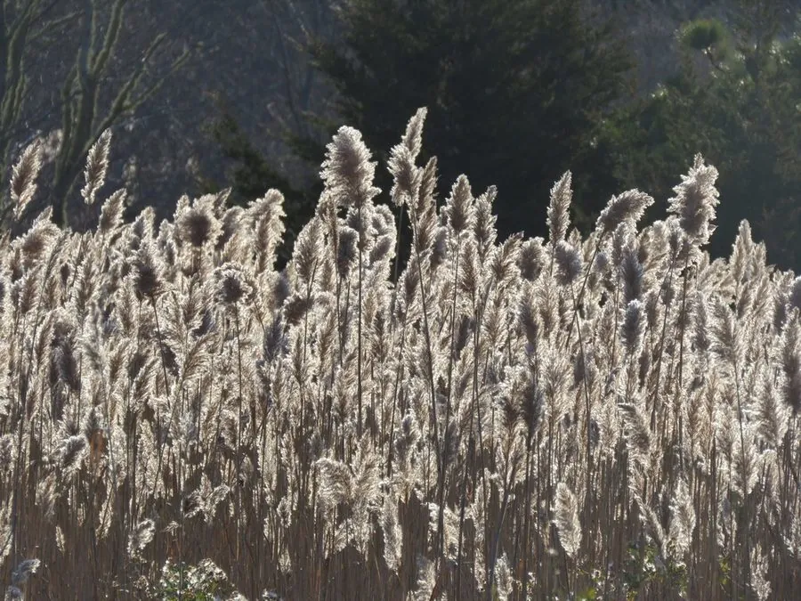

水生植物 · 植物界
芦苇 Phragmites australis

禾本科多年生高大水生草本，根状茎发达，花序如羽，是湿地生态系统的代表植物，可用于造纸和编织。
- 分类
- 门被子植物门纲木兰纲目禾本目科禾本科属芦苇属
- 栖息环境
- 河岸、湖泊、沼泽、滩涂及湿地浅水区，耐水湿、耐盐碱
- 地理分布
- 广布于全球温带与热带湿地，中国各地河湖沿岸常见
- 保护级别
- 暂无评估
物种志
芦苇为禾本科芦苇属多年生水生或湿生草本，株高 1–3 米，具粗壮发达的根状茎，横走于地下。茎秆直立，中空有节。叶片披针形，长 15–45 厘米，边缘粗糙。圆锥花序顶生，长 20–40 厘米，小穗含 3–7 朵小花，花序初开时带紫色，后变灰白、如羽毛状，花期 8–10 月，果期 10–11 月。
芦苇广布于全球温带和热带的河岸、湖泊、沼泽与滩涂，喜水湿、耐盐碱，靠根状茎和种子繁殖，常成片生长形成“芦苇荡”。它的茎秆坚韧，可用于造纸、编织席帘、制作工艺品；花序即芦花，可作扫帚和填充物；根状茎（芦根）可入药，有清热生津之效。芦苇湿地还能净化水质、消减风浪、为鸟类和水禽提供栖息地，是重要的生态工程植物。
形态与习性
- 株高1–3 米，茎秆中空有节
- 花期8–10 月，圆锥花序羽状
- 果期10–11 月，颖果细小
- 光照喜光，也耐轻度遮阴
- 水分生于浅水或湿润土壤，可耐短期淹水
- 土壤河滩淤泥、沼泽土，耐盐碱
- 繁殖根状茎繁殖为主，也可播种
- 主要用途造纸、编织、湿地净化与生态修复
趣味知识
- 芦苇的地下根状茎十分发达，可横向蔓延数米，形成连片芦苇荡。
- 芦苇花序成熟后呈灰白色羽毛状，即“芦花”，可作扫帚和填充材料。
- 芦苇茎秆纤维长而韧，是造纸和编织的好材料。
- 芦苇湿地在净化水质、消浪护岸和鸟类栖息方面具有重要生态价值。